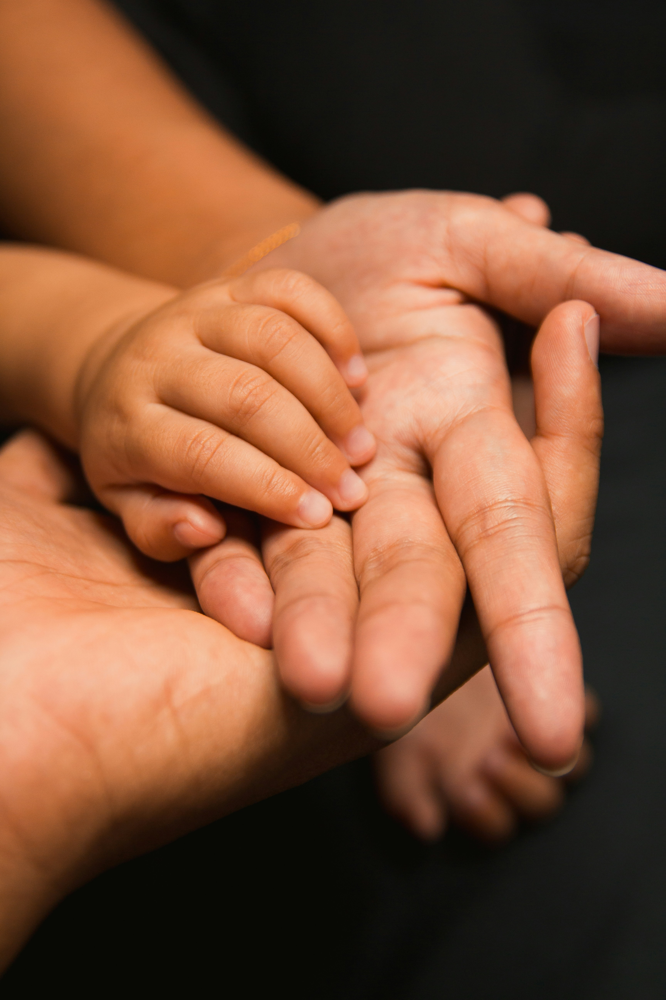
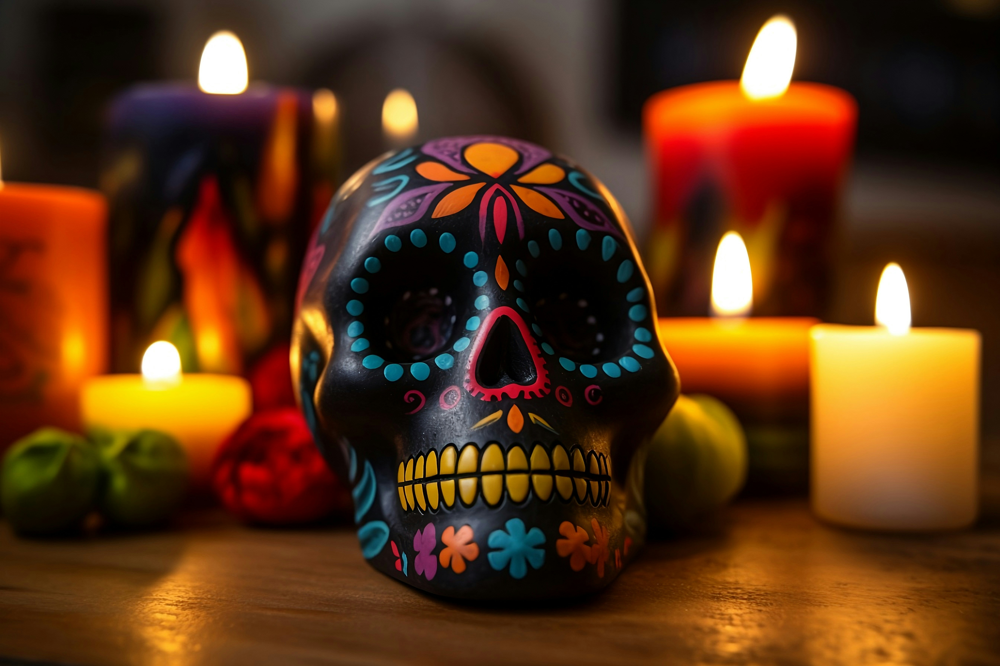
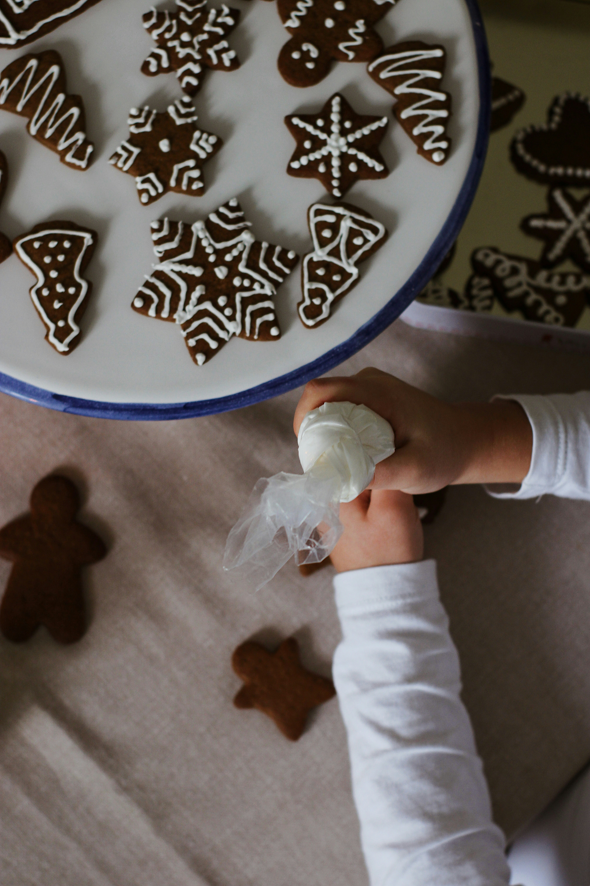

Life Through My Scrapbook
Life Through My Scrapbook is a collection of memories that hold a special place in my heart. From family traditions and holiday celebrations to everyday moments, each picture tells a story. I have always loved capturing memories because they remind me of the people, places, and experiences that make life meaningful. This collection is my way of sharing those special moments and preserving them for years to come.

Family Connections
Family | Love | Togetherness
Family is where some of life's most meaningful memories begin. Sometimes, it is the smallest moments, like holding a hand, sharing a laugh, or simply being together, that leave the biggest impressions on our hearts. This picture represents the love, comfort, and connection that family brings. These are the moments I want to remember and treasure for a lifetime.
Christmas Magic
Christmas | Traditions | Memories
Christmas has always been one of my favorite times of the year. There is something magical about the glow of Christmas lights, decorating the tree, and bringing family together. Each ornament holds a memory, and every tradition reminds me of the joy and excitement I felt growing up. As the years pass, I find myself cherishing these moments even more, especially the opportunity to create new memories while keeping old traditions alive.

Honoring Our Loved Ones
Día de los Muertos | Family | Remembrance
Día de los Muertos holds a special place in my heart because it reminds me that the people we love are never truly forgotten. Through colorful flowers, candles, photographs, and family traditions, we celebrate the lives of those who came before us. I believe remembering our loved ones is just as important as creating new memories. This tradition allows me to honor my family's history, share stories with the next generation, and keep the love and memories of those we have lost alive.

Baking From the Heart
Baking | Family Traditions | Homemade With Love
Baking has always been one of my favorite ways to bring family together and create lasting memories. From decorating Christmas cookies to sharing homemade treats, some of my happiest moments are spent in the kitchen. I love how something as simple as baking can bring laughter, creativity, and togetherness. These traditions remind me of my childhood, and I hope to continue passing them down to my family for generations to come.
Cherishing Simple Moments
Family | Togetherness | Life's Little Moments
As life gets busy, I have learned that some of the most meaningful memories come from the simplest moments. Whether it is watching a beautiful sunset, sharing a laugh, or spending a quiet evening with family, these are the moments I treasure most. Life moves quickly, and sometimes we forget to appreciate what is right in front of us. This picture reminds me that happiness is not always found in big celebrations but in the little moments of love, peace, and togetherness that make life so special.
Finding Joy in Everyday Life
Peace | Gratitude | Simple Pleasures
Sometimes the most beautiful moments in life are the quiet ones we often overlook. Whether it is enjoying a warm cup of coffee, reading a good book, or simply taking a moment to relax, I have learned to appreciate the little things. Life can become busy with family, work, and everyday responsibilities, but these peaceful moments remind me to slow down and be grateful. Finding joy in everyday life means appreciating what I have, making time for myself, and remembering that happiness can be found in the simplest moments.